Standard Deviation
What is Standard Deviation? | STDEV.P | STDEV.S | Variance
This page explains how to calculate the standard deviation based on the entire population using the STDEV.P function in Excel and how to estimate the standard deviation based on a sample using the STDEV.S function in Excel.
What is Standard Deviation?
Standard deviation is a number that tells you how far numbers are from their mean.
1. For example, the numbers below have a mean (average) of 10.
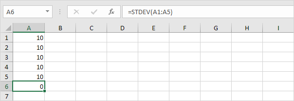
Explanation: the numbers are all the same which means there's no variation. As a result, the numbers have a standard deviation of zero. The STDEV function is an old function. Microsoft Excel recommends using the new STEDV.S function which produces the exact same result.
2. The numbers below also have a mean (average) of 10.
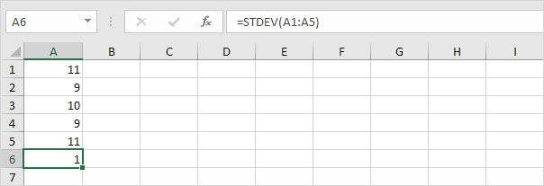
Explanation: the numbers are close to the mean. As a result, the numbers have a low standard deviation.
3. The numbers below also have a mean (average) of 10.
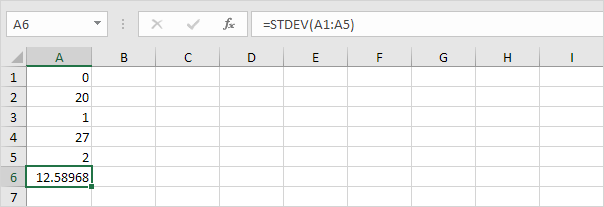
Explanation: the numbers are spread out. As a result, the numbers have a high standard deviation.
STDEV.P
The STDEV.P function (the P stands for Population) in Excel calculates the standard deviation based on the entire population. For example, you're teaching a group of 5 students. You have the test scores of all students. The entire population consists of 5 data points. The STDEV.P function uses the following formula:
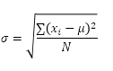
In this example, x1 = 5, x2 = 1, x3 = 4, x4 = 6, x5 = 9, μ = 5 (mean), N = 5 (number of data points).
1. Calculate the mean (μ).
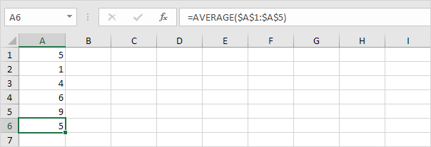
2. For each number, calculate the distance to the mean.
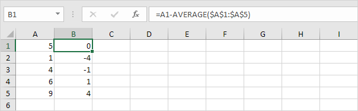
3. For each number, square this distance.
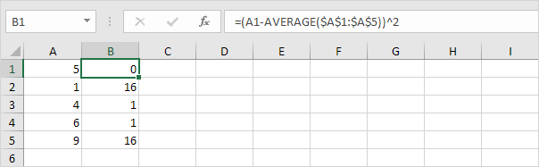
4. Sum (∑) these values.
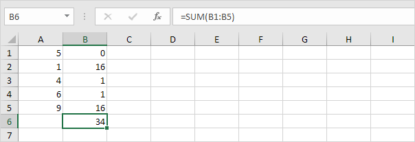
5. Divide by the number of data points (N = 5).
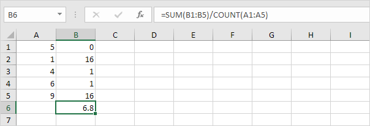
6. Take the square root.
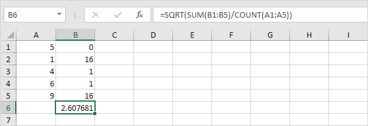
7. Fortunately, the STDEV.P function in Excel can execute all these steps for you.
STDEV.S
The STDEV.S function (the S stands for Sample) in Excel estimates the standard deviation based on a sample. For example, you're teaching a large group of students. You only have the test scores of 5 students. The sample size equals 5. The STDEV.S function uses the following formula:
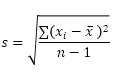
In this example, x1=5, x2=1, x3=4, x4=6, x5=9 (same numbers as above), x̄=5 (sample mean), n=5 (sample size).
1. Repeat steps 1-5 above but at step 5 divide by n-1 instead of N.
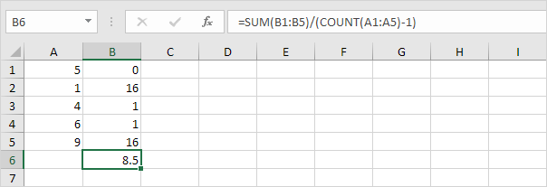
2. Take the square root.
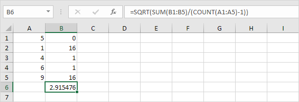
3. Fortunately, the STDEV.S function in Excel can execute all these steps for you.
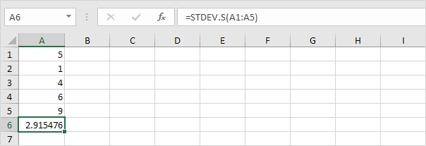
Note: why do we divide by n - 1 instead of by n when we estimate the standard deviation based on a sample? Bessel's correction states that dividing by n-1 instead of by n gives a better estimation of the standard deviation.
Variance
Variance is the square of the standard deviation. It's that simple. Sometimes it's easier to use the variance when solving statistical problems.
1. The VAR.P function below calculates the variance based on the entire population.
Note: you already knew this answer (see step 5 under STDEV.P). Take the square root of this result to find the standard deviation based on the entire population.
2. The VAR.S function below estimates the variance based on a sample.
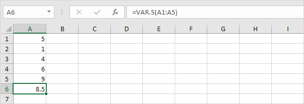
Note: you already knew this answer (see step 1 under STDEV.S). Take the square root of this result to find the standard deviation based on a sample.
3. VAR and VAR.S produce the exact same result.
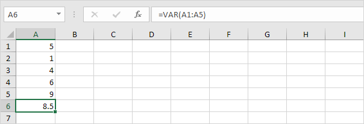
Note: Microsoft Excel recommends using the new VAR.S function.